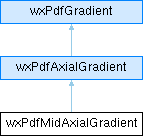

|
wxPdfDocument
1.4.0
Library for generating PDF documents from wxWidgets applications
|
|
wxPdfDocument
1.4.0
Library for generating PDF documents from wxWidgets applications
|
Class representing mid axial gradients. (For internal use only). More...
#include <pdfgradient.h>

Public Member Functions | |
| wxPdfMidAxialGradient (const wxPdfColour &colour1, const wxPdfColour &colour2, double x1, double y1, double x2, double y2, double midpoint, double intexp) | |
| Constructor. | |
| virtual | ~wxPdfMidAxialGradient () |
| Destructor. | |
| double | GetMidPoint () const |
| Get the coordinate of the mid point. | |
| Public Member Functions inherited from wxPdfAxialGradient | |
| wxPdfAxialGradient (const wxPdfColour &colour1, const wxPdfColour &colour2, double x1, double y1, double x2, double y2, double intexp) | |
| Constructor. | |
| virtual | ~wxPdfAxialGradient () |
| Destructor. | |
| const wxPdfColour & | GetColour1 () const |
| Get the gradient colour 1. | |
| const wxPdfColour & | GetColour2 () const |
| Get the gradient colour 2. | |
| double | GetX1 () const |
| Get x coordinate of start point. | |
| double | GetY1 () const |
| Get y coordinate of start point. | |
| double | GetX2 () const |
| Get x coordinate of end point. | |
| double | GetY2 () const |
| Get y coordinate of end point. | |
| double | GetIntExp () const |
| Get the interpolation exponent. | |
| Public Member Functions inherited from wxPdfGradient | |
| wxPdfGradient (wxPdfGradientType type) | |
| Constructor. | |
| virtual | ~wxPdfGradient () |
| Destructor. | |
| void | SetObjIndex (int n) |
| Set gradient object index. | |
| int | GetObjIndex () |
| Get gradient object index. | |
| wxPdfGradientType | GetType () const |
| Get the gradient type. | |
Additional Inherited Members | |
| Protected Attributes inherited from wxPdfGradient | |
| wxPdfGradientType | m_type |
| Gradient type. | |
Class representing mid axial gradients. (For internal use only).
| wxPdfMidAxialGradient::wxPdfMidAxialGradient | ( | const wxPdfColour & | colour1, |
| const wxPdfColour & | colour2, | ||
| double | x1, | ||
| double | y1, | ||
| double | x2, | ||
| double | y2, | ||
| double | midpoint, | ||
| double | intexp ) |
Constructor.
| colour1 | first colour |
| colour2 | second colour |
| x1 | x coordinate of the start point |
| y1 | y coordinate of the start point |
| x2 | x coordinate of the end point |
| y2 | y coordinate of the end point |
| midpoint | coordinate of mid point |
| intexp | interpolation exponent |
|
virtual |
Destructor.
|
inline |
Get the coordinate of the mid point.